福建省人工智能学会2022年学术年会暨首届闽台非遗数字化保护与智能处理会议于2022年12月9-10日在龙岩市召开，会议主题为“人工智能赋能文旅”，采用“线上+线下”相结合的形式举行。来自北京大学、清华大学、浙江大学、厦门大学等高校近百名相关学科领域专家学者和企业家代表参加了本次线上和线下的会议。
12月9日，在大会开幕之前，闽台非遗文化数字化保护与智能处理文化和旅游部重点实验室（以下简称“文旅部重实验室”）首次召开工作会议，荣誉顾问彭群生教授、学术委员会专家与实验室主任、副主任，以及多位实验室成员共同参与本次会议。
在文旅部重实验室学术委员会主任郭宗明研究员的主持下，实验室主任史晓东教授首先从实验室成立背景、研究团队和方向、实验室工作、存在问题、未来工作计划等五个方面介绍了实验室的现状和未来计划。随后，参会专家从各方面，对实验室存在问题与痛点，提出宝贵的建议；并对未来工作计划规划了前进路径，做出了顶层设计，为文旅部重实验室未来发展擘画蓝图，注入信心和动力。

文旅部重实验室工作会议
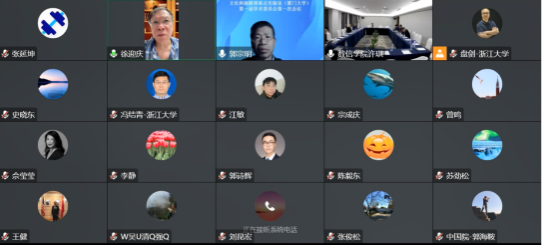
专家线上参加会议
12月10日的年会开幕式由龙岩学院数学与信息工程学院常务副院长卢盛荣主持。龙岩学院副校长邱龙新、厦门大学校长助理方颖、福建省人工智能学会理事长周昌乐在开幕式上致辞。
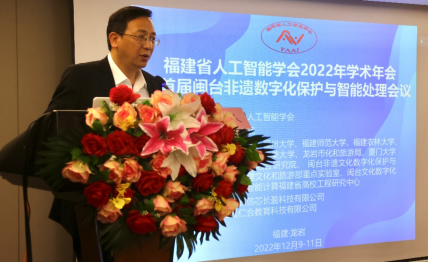
龙岩学院数学与信息工程学院常务副院长卢盛荣主持年会
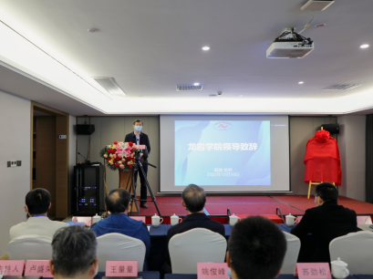
龙岩学院副校长邱龙新致辞
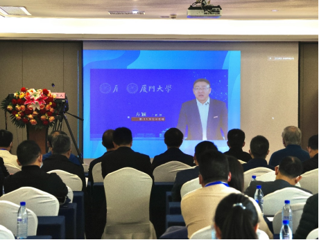
厦门大学校长助理方颖致辞
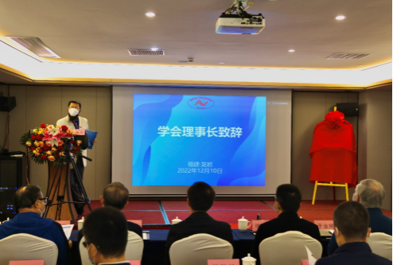
福建省人工智能学会理事长周昌乐致辞
福建省人工智能学会理事长周昌乐现场宣布了首届学会会士名单。
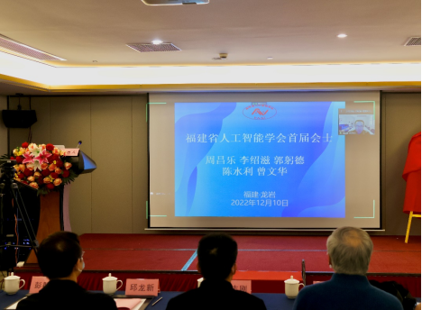
首届学会会士名单
厦门大学社科处副处长张随刚、文旅部重实验室主任史晓东、副主任姚俊锋、副主任王量量为文旅部重实验室揭牌。
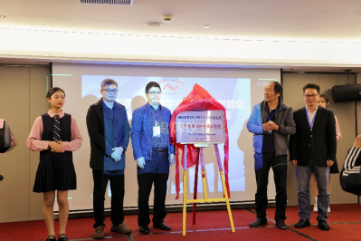
文旅部重实验室揭牌仪式
厦门大学社科处副处长张随刚为文旅部重实验室荣誉顾问彭群生教授与到场的学术委员会成员颁发聘书。
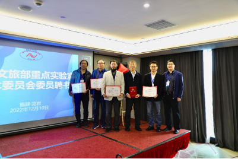
颁发文旅部重学术委员证书
年会还特邀了北京大学郭宗明教授、浙江大学于金辉教授、天津大学李哲研究员分别作“汉字字体与人工智能”、“文化遗产建模与绘制”、“建筑文化遗产人工智能应用——以长城和传统村落为例”等专题报告。
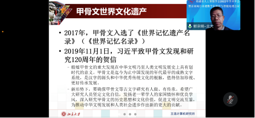
北京大学郭宗明教授作报告
北京大学郭宗明研究员认为，汉字是迄今为止连续使用时间最长的文字，也是上古时期各大文字体系中唯一传承至今的文字，更是目前世界上唯一仍被广泛使用的高度发展的表意文字。他的报告介绍了汉字的起源和发展历史，以及最近的二次汉字信息化技术革命—汉字激光照排技术和智能化汉字技术，并展示了最新各种酷炫的汉字字体以及人工智能技术在字体识别、生成、风格化等方面的应用。
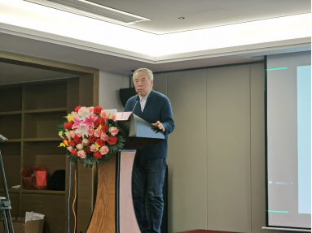
浙江大学于金辉教授作报告
浙江大学于金辉教授认为，我国优秀传统文化覆盖面非常广泛，但传统的文化遗产研究主要在文科领域中进行。他的报告介绍了团队在文化遗产建模和绘制方面的研究成果，包括计算机生成三维剪纸风格动画，用汉代画像石画像砖黑白拓片恢复三维浮雕模型，用黑白线条画辅助绘制唐卡和生成唐卡浮雕。
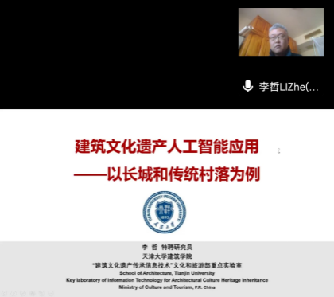
天津大学李哲研究员作报告
天津大学李哲研究员的报告由两部分内容组成：
1. 在世界首个“长城全线连续图像与三维数据库”的200多万张厘米级分辨率图像及其实景三维成果的基础上，使用图像类人工智能的目标识别、提取等技术，在数千公里范围内探查长城多类隐藏资源、揭示遗产丰富内涵、挖掘文化价值潜力，并在前述成果基础上进行数字化展示与阐释；
2. 在住建部“中国传统村落数字博物馆”乡建重点工程的基础上，使用人工智能图像处理技术，以村落装饰风格的识别、归类和准确定位、聚合分析为例，说明中国传统村落研究领域利用人工智能技术的潜力和基本操作方法。
本次年会论坛设有“青年”和“文旅”两个分论坛。在青年分论坛中，清华大学高跃长聘副教授、南京理工大学舒祥波教授、厦门大学苏劲松教授分别作了“超图计算及其应用”、“数据受限场景下的人体骨骼动作识别”、“浅谈本科生科研能力培养”等精彩的学术报告。
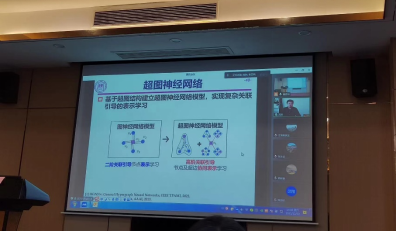
清华大学高跃长聘副教授报告
清华大学高跃长聘副教授介绍了超图计算理论及方法。超图是一种广义的图结构，因其具有较强的数据样本间非线性高阶关联的刻画和挖掘能力而被广泛应用于数据分类、检索等任务中。报告首先介绍超图的基本概念和特性；接下来，围绕超图计算，介绍超图结构建模、超图结构演化及超图神经网络模型构建；最后，介绍超图计算在计算机视觉及数据挖掘等领域的应用。在超图结构建模中，阐述了多类型超图的构建方式，实现面向复杂高阶关联的结构建模；在超图结构演化中，针对数据及标签数据欠定问题，介绍超图结构优化方法，实现面向复杂应用场景的超图结构更新；在超图神经网络中，介绍超图神经网络的基础模型。此外，也简要分享国家基金申报经验。
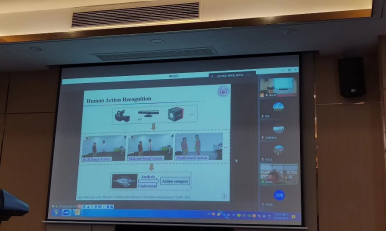
南京理工大学舒祥波教授报告
南京理工大学舒祥波教授的报告认为，随着数据采集设备的技术迭代更新，人体骨骼动作理解研究成为人机交互、自动驾驶、虚拟现实等领域的核心技术需求之一。与RGB和光流相比，骨骼数据具有数据体量小、计算效率高、噪声鲁棒、隐私保护等优点。报告探讨了开放场景中标记数据有限情况下的人体骨骼动作识别挑战，重点介绍课题组最近的两项工作：1）端到端的数据扩充与表示学习方法；2）多粒度对比表示学习方法，并应用于解决半/无监督场景下的人体骨骼动作识别任务。最后，基于以上两项工作简单分享了论文组织与撰写中的若干经验与体会。
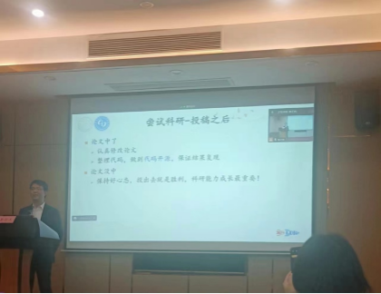
厦门大学苏劲松教授作报告
苏劲松教授认为，随着人工智能成为计算机学科的热门方向，越来越多的本科生开始进入实验室，参与人工智能科研工作，成为了实验室科研力量的重要补充。他曾带领本科生在ACL、AAAI、IJCAI等国际顶级会议上发表高水平文章。在本次报告中，分享了如何带领本科生入门科研，培养科研素质，跟随课题组开展科研，交流在此过程中的经验得失。
在文旅分论坛中，厦门大学姚俊峰教授、福州大学陈崇成教授、咪咕动漫AR事业部钱春华项目总监等高校和企业的专家代表分别作了 “闽台非遗数字化保护——木偶表演数字孪生”、“以文化引领数字化旅游行程 促进文旅深度融合”、“智慧文博文旅——元宇宙沉浸式交互空间”等精彩的学术报告。
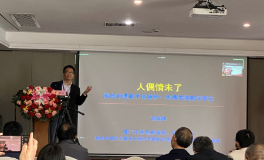
厦门大学姚俊峰教授作报告
姚俊峰教授在报告中介绍，研究工作提取了传统提线人偶的核心要素——通过提线操纵人偶的艺术形式，开创性地结合了可编程机械控制技术，实现了将亟需保护的传统提线人偶艺术与当今飞速发展的少儿机器人编程教育产业的结合，通过机器人编程教育的成功带动提线人偶艺术的发展，通过提线人偶艺术的巨大艺术价值促进机器人编程教育的成功，达到相互促进、共同发展的效果。
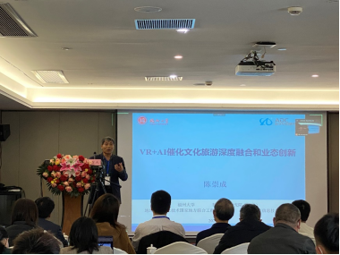
福州大学陈崇成教授报告
福州大学陈崇成教授介绍了团队面向文化旅游的全过程，开发集在线三维虚拟体验、行程个性化定制、主动信息推送、室内外一体化定位与智能导览、旅游产品在线交易等功能于一体的文化旅游信息服务系统，形成跨区域文化旅游消费服务的网络运营平台，开展虚实结合、线上线下一体化的文化旅游信息服务新模式的探索。该平台目前已有超过300个区域特色文化专题，服务旅游景区、文化场所或乡村，秉承“让文化触手可及、让旅游轻便快捷”理念，致力于提供全数字化旅游线路，实现“一部手机游中国”全域旅游业创新工程计划。
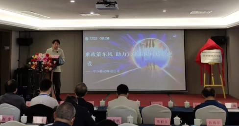
咪咕动漫AR事业部钱春华项目总监作报告
咪咕动漫AR事业部钱春华项目总监介绍，根据2021年福建省“四大经济”部署，中国移动福建公司成立智慧文旅专班，旨在结合“文化+”的文旅数字化、智慧化、融合化、生活化内涵升级和发展契机，融入地方文旅经济战略发展布局。5G应用、人工智能、物联网、大数据、云计算这几大技术构建了智慧文博、文旅的支撑体系，咪咕公司依托中国移动5G + “连接+算力+能力”，以T.621+5G+XR为主要技术手段，通过CETO的运营模式打造文化与科技融合的元宇宙沉浸式交互空间，强化个性化服务，为B端、G端客户提供数字孪生互动的一站式解决方案，提升C端用户体验，助力推动智慧文博、文旅的数字化纵深发展。
随后，进行了文旅部重点实验室交流会，建筑文化遗产传承信息技术文化部重点实验室张玉坤主任、互动媒体设计与装备服务创新文化部重点实验室吕德生主任，丝绸文化传承与产品设计数字化技术文化部重点实验室邹奉元主任、数字舞台设计与服务文化部重点实验室王汉熙主任、数字音乐智能处理技术文化和旅游部重点实验室谢秉元主任、光影交互服务技术文化和旅游部重点实验室蔡新元主任、可持续旅游智能评测技术文化和旅游部重点实验室赵莹老师、旅游多源数据感知与决策技术文化和旅游部重点实验室夏英老师、民歌智能计算与服务技术文化和旅游部重点实验室吴晓军主任以及闽台非遗文化数字化保护与智能处理文化和旅游部重点实验室史晓东主任共10个文旅部重点实验室主任和其他嘉宾参与线上线下的交流会，会议由厦门大学闽台非遗文化数字化保护与智能处理文化和旅游部重点实验室副主任姚俊峰教授主持。
在1个小时的交流会中，9个文旅部重点实验室代表从现状、研究方向、合作交流等方面，对各实验室做了介绍，在主持人姚俊峰教授的建议下，构建实验室共享平台，实现各实验室互动的长效机制，已成各文旅部重点实验室的共同意愿、共同目标，顺应实验室发展的意愿和需要，得到了与会各方的积极热烈响应。
嘉宾线上参会
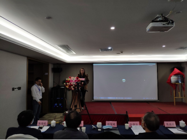
中山大学赵莹老师现场交流
随后，进行了人工智能赋能文旅圆桌论坛，由厦门大学信息学院史晓东教授主持，参与嘉宾有：浙江大学彭群生教授、厦门大学姚俊峰教授、福州大学陈崇成教授、龙岩文旅游局非遗科张永辉科长、福建省闽西文旅产业集团有限公司赖寿帆副总经理。
参会嘉宾讨论了文旅的内涵、AI如何赋能文旅、疫情下的虚拟旅游与元宇宙、文旅APP需要的大数据如何从各部门获取、八闽文旅特色赋能和打好台湾牌等主题，并结合自身行业特点提出AI赋能文旅的发展方向与解决方案。
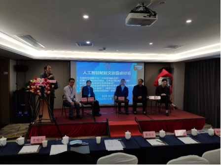
人工智能赋能文旅圆桌论坛
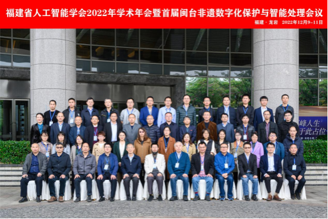
福建省人工智能学会2022年学术年会暨首届闽台非遗数字化保护与智能处理会议合影
为期两天的会议，大家交流人工智能与文化计算领域最新的研究成果，共商福建省人工智能学科教育和文旅科技及产业的发展大计，尤其是在闽台非遗文化计算方面深入探讨，将有力地促进闽台文化计算研究和文化产业的创新发展。